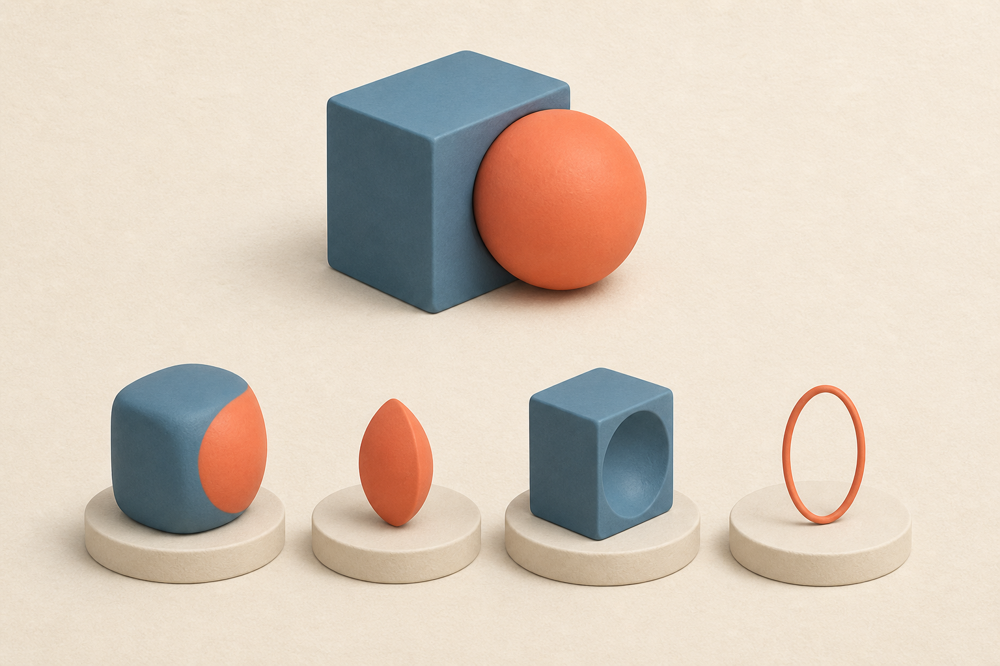
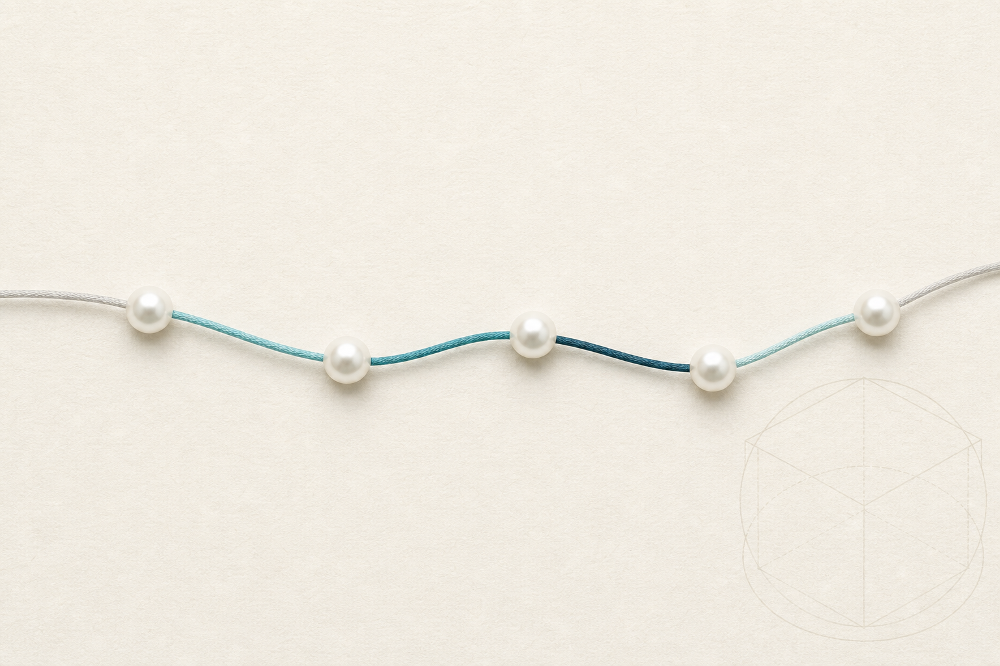
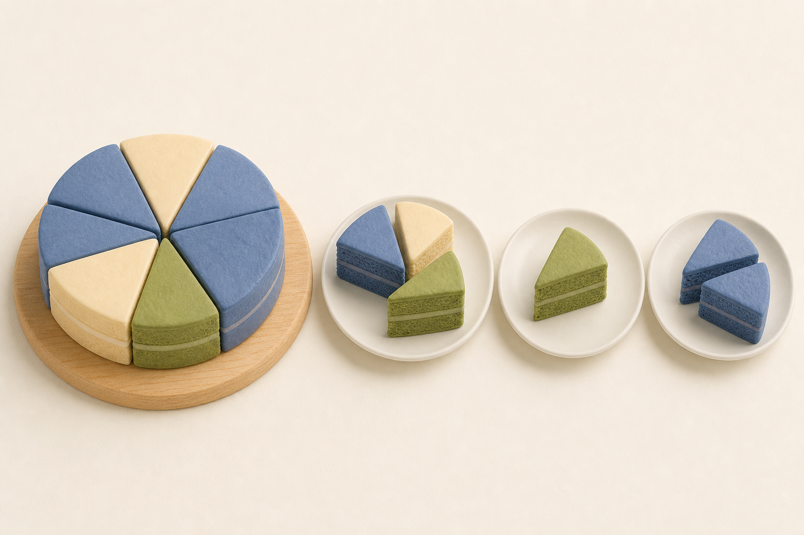

深入 OCCT 布尔运算 · 交互式教程
01一行代码的魔法
当你调用 BRepAlgoAPI_Fuse 时，到底发生了什么？
你在 CAD 软件里点过「合并」「开孔」「切除」按钮吗？比如给零件打一个螺丝孔。点下去的那一瞬间，底层的几何内核就在执行布尔运算。
很多 CAD 软件的内核正是 OCCT。这门课带你钻进它的源码，看清那「一瞬间」内部发生的一切。

四种玩法，同一对橡皮泥
想象两团橡皮泥：蓝灰色的立方体和珊瑚色的球，部分叠在一起。布尔运算就是四种不同的「玩法」：
FUSE · 并
把两团橡皮泥捏成一团。结果是一个无缝的整体。
COMMON · 交
只留下两团重叠的部分——那个凸透镜形状的小块。
CUT · 差
用球当模具，从立方体上挖走一块。打孔、开槽全靠它。
SECTION · 截面
只描出两团相碰处的轮廓线。不要体，只要交线。
在代码里，每个参与者都是一个 TopoDS_Shape，分成两组：Objects（被加工的）和 Tools（当工具的）。
源码里的「菜单」
OCCT 用一个枚举列出全部操作。这是真实源码，来自 BOPAlgo_Operation.hxx：
enum BOPAlgo_Operation
{
BOPAlgo_COMMON,
BOPAlgo_FUSE,
BOPAlgo_CUT,
BOPAlgo_CUT21,
BOPAlgo_SECTION,
BOPAlgo_UNKNOWN
};
定义一份名叫「布尔操作」的菜单。
菜单开始。
COMMON：交集——只要重叠部分。
FUSE：并集——全都要。
CUT：用 Tools 切 Objects。
CUT21：反着来，用 Objects 切 Tools。
SECTION：只要相交处的线。
UNKNOWN：还没点单（默认值）。
「A 切 B」和「B 切 A」结果完全不同——就像用饼干模具压面团 vs 用面团包住模具。CUT21 就是方向反过来的 CUT。很多布尔 bug 其实只是方向传反了。
追踪一次真实调用
用户代码只需一行：BRepAlgoAPI_Fuse aFuse(box, sphere);。这行代码触发的是下面这个构造函数——来自 BRepAlgoAPI_Fuse.cxx：
BRepAlgoAPI_Fuse::BRepAlgoAPI_Fuse(const TopoDS_Shape& S1,
const TopoDS_Shape& S2,
const Message_ProgressRange& theRange)
: BRepAlgoAPI_BooleanOperation(S1, S2, BOPAlgo_FUSE)
{
Build(theRange);
}
接收两个形状：S1 是 Object，S2 是 Tool。
还有一个进度条参数（可选，给 UI 显示进度用）。
出生时就向父类登记：「我的订单是 FUSE」。
然后立刻开工——调用 Build()。
Build() 一上来先做「体检」，确认材料齐全才开工——来自 BRepAlgoAPI_BooleanOperation.cxx：
// Check for availability of arguments and tools
// Both should be present
if (myArguments.IsEmpty() || myTools.IsEmpty())
{
AddError(new BOPAlgo_AlertTooFewArguments);
return;
}
// Check if the operation is set
if (myOperation == BOPAlgo_UNKNOWN)
{
AddError(new BOPAlgo_AlertBOPNotSet);
return;
}
体检第一项：Objects 和 Tools 两组都得有人。
缺一组？记录错误「参数太少」，直接收工。
体检第二项：菜单上点单了吗？
还是 UNKNOWN？记录错误「没选操作」，收工。
这种「先体检再干活」的写法叫防御式编程。
整个旅程，点一遍看看
从你的一行代码到拿回结果，数据是这样流动的：
动手想一想
你想在零件上打一个圆孔。该用哪个操作？两组怎么放？
CUT 和 CUT21 的区别是什么？
你只想要两个曲面的交线（不要任何体），该点哪个单？
Build() 里那句「指挥求交与建造」是谁在真正干活？OCCT 把活儿分包给了四个部门——下一章，认识这个摄制组。
认识演员表
布尔运算的四个幕后角色
上一章你看到 Build() 一行返回结果。但有个秘密：Build 自己什么几何活都不干。它是个项目经理，把活儿分包给一个「摄制组」。
把 OCCT 布尔运算想成电影摄制组——每个部门职责分明：
BRepAlgoAPI
对外签约（接收你的形状和订单），对内调度，最后交付成片。你平时只跟他打交道。
BOPAlgo_PaveFiller
跑遍两个形状的每个角落，找出所有「交叉点」——这是整部片子最贵的环节。
BOPAlgo_BOP
按剧本（FUSE/COMMON/CUT）把切好的素材挑选、拼接成最终成片。
BOPDS_DS
所有镜头、标记、中间结果都记录在册。摄影组写进去，导演读出来——部门间从不直接传东西。
制片人怎么分活儿
看真实源码（BRepAlgoAPI_BooleanOperation.cxx）。注意进度条的数字——它泄露了哪个环节最贵：
// If necessary perform intersection of the argument shapes
if (myIsIntersectionNeeded)
{
// Combine Objects and Tools into a single list for intersection
NCollection_List<TopoDS_Shape> aLArgs = myArguments;
for (NCollection_List<TopoDS_Shape>::Iterator it(myTools); it.More(); it.Next())
{
aLArgs.Append(it.Value());
}
// Perform intersection
IntersectShapes(aLArgs, aPS.Next(70));
如果还没做过求交，就先做。
把 Objects 和 Tools 合并成一张总名单——
求交阶段不分敌我，所有形状一起查。
逐个把 Tools 追加到名单末尾。
名单齐了。
送去求交（内部就是雇佣摄影组 PaveFiller）。
注意那个 70：整个任务 100 分进度，求交独占 70 分——最贵环节实锤。
按订单挑导演
求交完成后，制片人根据订单类型挑「导演」：
// Builder Initialization
if (myOperation == BOPAlgo_SECTION)
{
myBuilder = new BOPAlgo_Section(myAllocator);
myBuilder->SetArguments(myDSFiller->Arguments());
}
else
{
myBuilder = new BOPAlgo_BOP(myAllocator);
myBuilder->SetArguments(myArguments);
((BOPAlgo_BOP*)myBuilder)->SetTools(myTools);
((BOPAlgo_BOP*)myBuilder)->SetOperation(myOperation);
}
开始请导演。
订单是 SECTION（只要交线）？
请专拍纪录片的 Section 导演。
把素材清单给他。
其他订单（FUSE/COMMON/CUT）——
都请全能导演 BOP。
告诉他谁是 Objects、
谁是 Tools、
这次拍哪种片（操作类型）。
四个部门从不直接传递数据——一切经过档案室 DS。这种「分层架构 + 共享数据结构」让任何一层都能单独升级替换。工程师叫它「关注点分离」。
如果他们有个群聊……
一次 Fuse 运算的完整对话，大概是这样的：
注意：GF（General Fuse）是基础算法——Splitter、Section 和布尔三件套全是它的「衍生剧」，共用同一个摄影组。
部门定位演练
Fuse 结果缺了一条本该有的交线棱边。先怀疑哪个部门？
为什么 Section、Splitter、BOP 能共享同一个 PaveFiller？
你想自创一个新布尔类操作（比如只保留外壳）。最聪明的起点是？
摄影组到底怎么「跑遍现场」？它有一条严格的安检流水线，还有一串漂亮的「珍珠项链」。
交点部分
PaveFiller 的安检流水线与珍珠项链
摄影组（PaveFiller）面对的现场：两个形状加起来十几个面、几十条边、一堆顶点。到底按什么顺序检查「谁碰了谁」？
先认识它最重要的发明——珍珠项链：

一条边是线绳；求交时发现的交点是穿上去的珍珠（Pave）；相邻两颗珍珠之间的绳段叫 Pave Block。每条有限边天生自带一个 Pave Block——首尾两个端点就是头两颗珍珠。
动手摸一摸：一条被切成三段的边
下面是一条边的「项链视图」。鼠标悬停每个绳段试试：
每颗珍珠的位置用参数 t 表示——所以珍珠可以排序、绳段可以精确定义。两条边若整段重合，它们的 Pave Block 还会被绑成一个 Common Block。
安检流水线：从小到大
真实源码（BOPAlgo_PaveFiller.cxx 的 PerformInternal）。注释里的数字是「维度暗号」：0=顶点，1=边，2=面：
// 00
PerformVV(aPS.Next(aSteps.GetStep(PIOperation_PerformVV)));
if (HasErrors()) { return; }
// 01
PerformVE(aPS.Next(aSteps.GetStep(PIOperation_PerformVE)));
if (HasErrors()) { return; }
UpdatePaveBlocksWithSDVertices();
// 11
PerformEE(aPS.Next(aSteps.GetStep(PIOperation_PerformEE)));
// 02
PerformVF(aPS.Next(aSteps.GetStep(PIOperation_PerformVF)));
// 12
PerformEF(aPS.Next(aSteps.GetStep(PIOperation_PerformEF)));
00 = 顶点查顶点：有没有两颗顶点撞在一起？
执行，并推进进度条。
出错立刻收工——每一站都这样。
01 = 顶点查边：顶点落在别人的边上了吗？
执行。
照例检查错误。
把「撞在一起的同位顶点」同步进所有珍珠记录（SD = Same Domain，同域）。
11 = 边查边：两条边相交？穿珍珠！
02 = 顶点查面：顶点扎进面里了吗？
12 = 边查面：边穿过面？交点处穿珍珠！
压轴的是 22（面/面求交，算出交线），然后一声令下剪断所有边：
// 22
PerformFF(aPS.Next(aSteps.GetStep(PIOperation_PerformFF)));
if (HasErrors()) { return; }
UpdateBlocksWithSharedVertices();
myDS->RefineFaceInfoIn();
MakeSplitEdges(aPS.Next(aSteps.GetStep(PIOperation_MakeSplitEdges)));
22 = 面查面：计算交线——最贵的一站。
执行。
照例查错。
让交线经过的顶点全网同步。
档案室刷新每个面的「面情报」（FaceInfo）。
MakeSplitEdges：沿所有珍珠，把每条边真正剪成小段。
流水线全景，点一遍
为什么从小到大？因为低维交点常常「顺便解决」高维相交——两条边的交点，往往正是两个面交线上的点，不用再算一遍。
每个顶点/边/面都带一个容差。两个东西距离 ≤ 容差之和 = 相交。这是几何内核在浮点世界的生存法则——记住它，下下章的 Fuzzy Value 你会秒懂。
珍珠本珠：源码只有两件事
//! The class BOPDS_Pave is to store
//! information about vertex on an edge
class BOPDS_Pave
{
public:
DEFINE_STANDARD_ALLOC
//! Empty constructor
BOPDS_Pave();
//! Constructor with index and parameter
BOPDS_Pave(const int theIndex, const double theParameter);
官方注释：这个类存「边上的顶点」信息。
就是我们说的珍珠。
类定义开始。
公开接口。
内存分配的标准样板代码（可忽略）。
空构造：先做一颗空白珍珠。
真正有用的构造：传入两个值——
顶点在档案室的编号 + 它在曲线上的里程 t。一颗珍珠就这两样东西。
流水线演练
两个立方体棱对棱搭在一起。这次相碰最先在流水线哪一站被发现？
结果里两个明明重合的角点变成了两个独立顶点。最该检查什么？
为什么流水线先做 VV，最后才做 FF，而不是反过来？
现在所有边都被剪成段、所有面都被交线划成片——谁来决定哪些零件进成片？后厨已经把蛋糕切好了，该装盘了。
建造部分
GF 切好整个蛋糕，BOP 按订单装盘
零件已切好、整齐躺在档案室。现在导演（BOPAlgo_BOP）登场——他从不亲自切割，只负责挑选与拼装。

这就是 General Fuse 的精髓：把两个叠在一起的蛋糕沿所有接触面全部切开，得到三类碎块——S1 独有（Sp1）、S2 独有（Sp2）、公共（Sp12）。四种布尔操作只是四张不同的「装盘订单」。
四张装盘订单
FUSE
全都装走：Sp1 + Sp2 + Sp12，再把内壁熔掉变成一个整体。
COMMON
只装公共夹层：Sp12。
CUT (12)
只装第一个蛋糕没碰过对方的部分：Sp1。
CUT21
反向订单：Sp2。
拖一拖：订单 → 装盘内容
把左边的「订单」拖到右边对应的「盘子」上：
Sp1 + Sp2 + Sp12（全部碎块）
Sp12（只有公共块）
Sp1（只有 S1 的独有块）
Sp2（只有 S2 的独有块）
导演的工作清单
BOP 的总流程（BOPAlgo_BOP.cxx 的 PerformInternal1）从「填映像表」开始。Images 是核心词——记录每个原始形状变成了哪些碎块：
// 3. Fill Images
// 3.1 Vertices
FillImagesVertices(aPS.Next(aSteps.GetStep(PIOperation_TreatVertices)));
if (HasErrors())
{
return;
}
BuildResult(TopAbs_VERTEX);
if (HasErrors())
{
return;
}
第三步：填映像表。
从最低维的顶点开始。
登记每个原始顶点的「替身」（被合并成了哪颗新顶点）。
照例出错就收工。
用顶点映像先拼一版顶点级结果。
然后逐级向上：边 → 线框 → 面 → 壳 → 体，
每一级都是「填映像 → 拼结果」。
像盖楼：地基打牢才砌上一层。
最简单的订单：FUSE 全都要
BuildRC（Build Result Compound）按订单装盘。看 Fuse 分支——配一个「防重名册」保证每块蛋糕只装一次：
// A. Fuse
if (myOperation == BOPAlgo_FUSE)
{
NCollection_Map<TopoDS_Shape, TopTools_ShapeMapHasher> aMFence;
aType = TypeToExplore(myDims[0]);
TopExp_Explorer aExp(myShape, aType);
for (; aExp.More(); aExp.Next())
{
const TopoDS_Shape& aS = aExp.Current();
if (aMFence.Add(aS))
{
aBB.Add(aC, aS);
}
}
myRC = aC;
return;
}
A 计划：订单是 FUSE？
进入全都要模式。
准备一本「防重名册」aMFence（集合，自动去重）。
确定要遍历的零件类型（比如实体）。
派一个探索者走遍 GF 草稿结果。
逐个零件看过去：
拿到当前零件。
名册里没登记过？（Add 返回 true = 新面孔）
装进结果盘 aC。
这盘就是草稿结果 myRC。
FUSE 订单完成，收工。
Common/Cut 分支则麻烦些：每块零件要先判断 IN/OUT/ON 状态再决定去留——「这块在对方肚子里吗？」
剪辑机房的对话
「登记族谱」= 记录每个原始形状被 Modified / Generated / Deleted 的完整记录。正因为有它，你改了草图之后 CAD 还能「重新找到那个孔」。这就是文档说 GF 是 history-based 架构的含义。
装盘演练
Cut 的结果里残留了一小块本该被切掉的材料。最可能哪个环节出错？
为什么 OCCT 不为 Fuse/Common/Cut 各写一套独立算法？
同样的代码，有人跑出完美结果，有人跑出碎渣——差别往往只是几个开关。最后一章，学会拨布尔运算的「调音台」。
调参与排错
布尔运算的调音台
前四章你看懂了整条流水线。但现实是：两个明明相交的零件，Fuse 出来却是空的；或者一次运算跑 30 秒。先别怀疑人生——大概率只是「推子」没调对。
布尔运算像一张录音棚调音台，暴露了这排推子：
Fuzzy Value
容差推子。模型有微小缝隙、差一点点就相交时调大它。默认 1e-7。
Run Parallel
多核开关。大模型、批量运算时打开。默认关。
Non-Destructive
安全模式。保证输入形状不被就地修改（默认会更新容差）。要保留原模型必开。
Glue
贴合模式。确定形状只贴不穿透时开 GlueShift/GlueFull，跳过昂贵求交，提速明显。用错会出错果。
Use OBB
OBB 加速开关。斜放的细长形状多时打开，粗筛更准。
Check Inverted
「内外翻转体」体检开关。默认开，确认输入干净可关掉换速度。
一行一个推子（官方示例）
来自 OCCT 官方文档 dox/specification/boolean_operations 的 GF 用法——生产代码可直接照抄这个骨架：
BOPAlgo_Builder aBuilder;
// Setting arguments
NCollection_List<TopoDS_Shape> aLSObjects = …; // Objects
aBuilder.SetArguments(aLSObjects);
// Set parallel processing mode (default is false)
bool bRunParallel = true;
aBuilder.SetRunParallel(bRunParallel);
// Set Fuzzy value (default is Precision::Confusion())
double aFuzzyValue = 1.e-5;
aBuilder.SetFuzzyValue(aFuzzyValue);
// Set safe processing mode (default is false)
bool bSafeMode = true;
aBuilder.SetNonDestructive(bSafeMode);
// Set Gluing mode for coinciding arguments (default is off)
BOPAlgo_GlueEnum aGlue = BOPAlgo_GlueShift;
aBuilder.SetGlue(aGlue);
// Perform the operation
aBuilder.Perform();
// Check for the errors
if (aBuilder.HasErrors())
{
return;
}
// result of the operation
const TopoDS_Shape& aResult = aBuilder.Shape();
请一位 GF 后厨（Builder）。
把要加工的形状列成清单交给他。
（GF 不分 Objects/Tools，全是平等的参与者。）
推子 1：打开多核并行。
推子 2：容差调到 1e-5——比默认宽容 100 倍，吞掉建模小缝隙。
推子 3：开安全模式，输入形状一根毛都不动。
推子 4：贴合模式 GlueShift——确定只贴不穿透时的加速器。
开工！
铁律：先查错——
有致命错误就别碰结果。
体检通过，才取结果。
两个值得偷学的源码细节
细节一：Fuzzy 推子有「下限保护」（BOPAlgo_Options.cxx）：
void BOPAlgo_Options::SetFuzzyValue(const double theFuzz)
{
myFuzzyValue = std::max(theFuzz, Precision::Confusion());
}
设置容差推子。
不管你传多小，最低也按系统精度（1e-7）算。看到 std::max 包住输入——这是「参数夹紧」防御术，值得偷学。
细节二：隐藏的调试彩蛋（BRepAlgoAPI_BooleanOperation.cxx）。设一个环境变量就能让 OCCT 自动抓取翻车现场：
OSD_Environment env("CSF_DEBUG_BOP");
TCollection_AsciiString pathdump = env.Value();
myIsDump = (!pathdump.IsEmpty());
myPath = pathdump.ToCString();
读环境变量 CSF_DEBUG_BOP。
取出它的值（一个目录路径）。
设置了就打开「行车记录仪」模式。
每当输入或结果体检不合格，自动把两个输入形状 + 复现脚本 dump 到该目录——OCCT 开发者自己就这么抓 bug。
症状 → 药方速查表
结果为空 / 缺块
先 BRepAlgoAPI_Check 体检两个输入；再把 Fuzzy 调大（如 1e-5）重试——多半是微小缝隙没「碰上」。
跑得太慢
开 SetRunParallel(true)；零件只贴不穿透的场景再加 SetGlue(BOPAlgo_GlueShift)。
原始模型被改了
默认会就地更新输入的容差。开 SetNonDestructive(true) 即可保护原件。
结果怪异 / 自相交
「垃圾进，垃圾出」——输入本身可能自相交。Check 输入 + 读 HasWarnings() 的警告清单。
偶发崩溃要报 issue
设 CSF_DEBUG_BOP=/某目录，让 OCCT 自动 dump 翻车现场（输入 + 复现脚本）。
HasErrors() 是致命伤（无结果可取），HasWarnings() 是亚健康（结果可用但有隐患）。大型几何库普遍采用这种双轨制——忽略警告等于埋雷。
终章演练：你来当工程师
两个零件理论上面贴面，Fuse 后却是两个独立体（中间有肉眼难见的缝）。先拨哪个推子？
要对 200 对零件批量做 Cut。最先打开什么？
运算后用户的原始模型容差被改了，客户投诉。怎么避免？
AI 写的布尔代码偶尔崩溃，你想给 OCCT 官方提 issue。怎么抓现场？
课程完结，回顾全程
你已经走完了 OCCT 布尔运算的整条流水线——从一行代码，到看懂内核的每个部门：
Fuse/Common/Cut/Section 都是 General Fuse 的不同出口
制片人 API · 摄影组 PaveFiller · 导演 BOP · 档案室 DS
交点部分（VV→…→FF 穿珍珠）+ 建造部分（填映像、按订单装盘）
Fuzzy / Parallel / Non-Destructive / Glue —— 按「症状→药方」查表调参
下一步去哪儿
📖 读原典
仓库里的 dox/specification/boolean_operations——本课程的官方蓝本，含全部数学细节。
🧪 动手玩
用 Draw 测试台敲 bfuzzyvalue / bfillds / bbop，亲手复现每一章。
🔬 看测试
src/ModelingAlgorithms/TKBO/GTests 里的单元测试——每个都是一份可运行的最小示例。
深入 OCCT 布尔运算 · 完 🎉
相交计算的几何引擎
三条求交路线与夜路描缝
正课在上一章已经完结。但模块 3 留了一个没拆的盲盒：流水线压轴的 FF 站「算出交线、最贵」——可交线到底是怎么算出来的？一张圆柱面和一张汽车引擎盖那样的曲面相交，世界上根本没有现成公式。
这一章打开那台机器的外壳。先看清委托链——摄影组（PaveFiller）自己并不动手算几何，它层层外包：
只负责调度：「3 号面和 7 号面，去查一下交在哪。」
接单的承包商：备好两张面的资料，把测量结果整理成「交线」交回去。
真正下场测量的人。第一件事不是算，而是分诊：这单子走哪条路线？
分诊台：先验明正身，再选路线
测绘队把曲面分成两类。平面、圆柱、球、锥这类「正规几何」，交线有现成的数学公式，能写出解析解；而 B 样条这类自由曲面没有公式，只能实地测量。验身的源码就这几行：
// Surface type definition
int ts1 = 0;
switch (typs1)
{
case GeomAbs_Plane:
case GeomAbs_Cylinder:
case GeomAbs_Sphere:
case GeomAbs_Cone:
ts1 = 1;
break;
case GeomAbs_Torus:
ts1 = bGeomGeom;
break;
default:
break;
}
给 1 号曲面验明正身。
先假设它是「自由曲面」（0 分）。
看看它登记的类型——
开始逐项核对：
平面？
圆柱面？
球面？
锥面？
以上四种都算「正规几何」，记 1 分。
核对完毕。
圆环面（甜甜圈）？特殊对待——
只有轴线对齐等好情况才算正规（bGeomGeom）。
否则按自由曲面处理。
其余一切（B 样条、拉伸面、偏移面…）
保持 0 分：没有公式，得实地测量。
两张面各打一次分，加起来就是路线图。源码注释原话："Possible intersection types: Geom-Geom / Geom-Param / Param-Param"：
📖 查公式（1+1）
两张都正规：翻开代数表直接抄答案。平面×平面=直线，平面×圆柱=椭圆……结果是精确曲线，又快又准。
📐 半查半量（1+0）
一张正规一张自由：正规的那张提供方程当「路标」，自由的那张沿路采样。中等开销。
🔦 夜路描缝（0+0）
两张都自由：没有任何公式可查，只能打着手电沿交缝一步步走出来。最贵的路线，下一节详拆。
动手分诊：你来当队长
给两张待求交的曲面各选一个类型，看看测绘队会派哪条路线：
曲面 A
曲面 B
* 圆环面（甜甜圈）是「看情况」选手：只有轴线对齐等特殊摆位才能走公式路线——就是上面代码里那个 bGeomGeom。
夜路描缝：没有公式的地方，用脚走
最贵的 Param-Param 路线，OCCT 的类名叫 IntWalk_PWalking——名字里就带着 walking。先看官方注释怎么自我介绍：
//! This class implements an algorithm to determine the
//! intersection between 2 parametrized surfaces, marching from
//! a starting point. The intersection line
//! starts and ends on the natural surface's boundaries.
class IntWalk_PWalking
{
public:
DEFINE_STANDARD_ALLOC
//! Constructor used to set the data to compute intersection
//! lines between Caro1 and Caro2.
//! Deflection is the maximum deflection admitted between two
//! consecutive points on the resulting polyline.
//! TolTangency is the tolerance to find a tangent point.
这个类负责求两张「参数化曲面」的交线，
方法是：从一个起点出发，行进（marching）。
走出来的交线
起止于曲面的自然边界（走到边就停）。
类名直译：「点行走」。
类定义开始。
公开接口。
内存分配样板代码（可忽略）。
构造函数：登记这单测量任务的资料——
两张待求交的曲面 Caro1、Caro2。
Deflection（允许偏差）= 步子最大能迈多大：
相邻两颗「图钉」之间允许偏离真实曲线多远。
TolTangency = 判定「切着碰」的容差。
把它画出来就是这张图——两张纸面的交缝处，测绘队边走边钉图钉，最后用一根丝线把图钉串成光滑曲线：
走完一遍，手里得到的是一串离散的图钉——源码里叫 WLine 折线。但布尔运算的档案室要的是一条真正的曲线，所以最后一步是拟合：
occ::handle<Geom_Curve> aBSp = GeomInt_IntSS::MakeBSpline(WL, ifprm, ilprm);
//
if (myApprox1)
{
H1 = GeomInt_IntSS::MakeBSpline2d(WL, ifprm, ilprm, true);
}
//
if (myApprox2)
{
H2 = GeomInt_IntSS::MakeBSpline2d(WL, ifprm, ilprm, false);
}
//
IntTools_Curve aIC(aBSp, H1, H2);
mySeqOfCurve.Append(aIC);
把图钉串 WL 拟合成一条光滑的 3D B 样条曲线。
如果客户还要 1 号面上的「影子版」——
在 1 号面的参数地图上再画一条 2D 曲线（pcurve）。
2 号面同理——
也画一条 2D 影子。
3D 曲线 + 两张 2D 影子，打包成一条「交线」。
归档，交给摄影组继续穿珍珠。
查公式路线给的是精确曲线；但走夜路得到的交线是测量 + 拟合的产物，天生带误差。OCCT 不藏着掖着：ComputeTolReached3d 会把「3D 曲线和两张面之间的实际最大偏差」量出来，作为这条交线的容差写进档案。所以布尔结果里新边的容差常常比输入大——这不是 bug，是一份诚实的测量报告。
一张订单的全流程，点一遍
把整章串起来：FF 站派一张「3 号面 × 7 号面」的订单下来，测绘队从接单到交付：
器材间：贵的仪器只造一次
测量途中要反复用到两件贵重仪器：投影器（这个点投到面上落在哪？）和分类器（这个点在面的范围内吗？）。为整场布尔运算服务的「器材间」就是 IntTools_Context：
//! The intersection Context contains geometrical
//! and topological toolkit (classifiers, projectors, etc).
//! The intersection Context is for caching the tools
//! to increase the performance.
class IntTools_Context : public Standard_Transient
{
public:
//! Returns a reference to point classifier
//! for given face
Standard_EXPORT IntTools_FClass2d& FClass2d(const TopoDS_Face& aF);
//! Returns a reference to point projector
//! for given face
Standard_EXPORT GeomAPI_ProjectPointOnSurf& ProjPS(const TopoDS_Face& aF);
官方注释：Context 装着几何/拓扑工具箱
（分类器、投影器等等）。
存在的意义只有一个：把工具缓存起来，
提高性能。
类定义开始。
公开接口。
「给我 3 号面的点分类器」——
没有就现造一台，造完留在架子上；
下次再要，直接从架子上拿。
「给我 3 号面的投影器」——
同样的租赁规则。
每张面一台，全场共用。
整场布尔运算从头到尾只有一间器材间——摄影组开工时建好，传给每个外包队。仪器按「哪张面/哪条边」登记：第一次借要现造（贵），之后人人都直接取用（免费）。几十万次「点在不在面里」的查询，就是这样才跑得动的。
测绘队入队考核
两张汽车引擎盖那样的自由曲面求交，测绘队走哪条路线？
同一个法兰零件，用「平面+圆柱」建模，或整体转成 NURBS 自由曲面再做布尔。哪个更快更稳？
布尔结果中，交线处新边的容差比两张输入面都大。最可能的来源是？
在 Draw 测试台里敲 bopcurves f1 f2 -2d，就能直接看到两张面的交线——这正是本章测绘队的独立出口。回头再看模块 5：Fuzzy Value 调的，其实就是这台几何引擎的判定松紧。机器拆完了，盲盒没有了。🎉
实战判例篇
卷宗室里的相交事故
模块 6 拆完了机器。但这台机器在真实世界里翻过哪些车？圆锥碰球丢过交点，圆柱碰平面多算过交线……
OCCT 二十多年攒下的每一桩事故都没有被扔掉，而是写成「判例」永久归档在仓库的 tests/ 目录里：出过的 bug → 最小复现脚本 → 每晚被 CI 复审一遍 → 同样的事故永不二犯。这套档案的编目方式：
boolean 布尔事故科，lowalgos/intss 曲面求交事故科……
bopfuse_simple（简单 Fuse 卷）…每卷配公共工具 begin 和判读规则 parse.rules。
bug21494_1：一份几十行的最小复现脚本，就是一桩案子的全部卷宗。
读判例是理解相交算法最快的路。下面开三个抽屉，看三桩真实案件。
卷宗检索台：点开看案情
案例一：锥碰球，交点不能丢
案由 OCC21494「锥球相交失败」。判例原文（tests/lowalgos/intss/bug21494_1）——注意它的现场是当场搭建的，两行命令造形，零外部依赖：
pcone bc 15 0 10
psphere bs 10
explode bc f
explode bs f
set log [bopcurves bc_1 bs_1 -2d]
regexp {Tolerance Reached=+([-0-9.+eE]+)\n+([-0-9.+eE]+)} $log full Toler NbCurv
if { ![regexp {1 point\(s\) found} $log full] } {
puts "Error: Cone apex and Pole of sphere are excluded..."
}
if {$NbCurv != 1} {
puts "Error: Please check NbCurves for intersector"
}
if { $Toler > 2.0e-7} {
puts "Error: Big tolerance value"
}
现场搭建：造一个底半径 15、收尖到 0、高 10 的圆锥。
再造一个半径 10 的球。
把圆锥拆出面（bc_1 = 锥面）。
把球拆出面（bs_1 = 球面）。
按快门！bopcurves 求两面交线，测量报告存进 log。
用正则从报告里抠出两个数：实测容差 + 交线数。
验收第 1 条：报告里必须有「找到 1 个交点」——
锥顶恰好戳在球上，那是一个孤立交点，丢了就是事故。
验收第 2 条：交线必须恰好 1 条，
多一条少一条都报错。
验收第 3 条：实测容差不得超过 2×10⁻⁷，
误差太大也算翻车。
交线（curves）之外还有孤立交点（points）。锥顶碰球极是「点接触」，产出的不是曲线而是一个点。这桩案子立案的原因，就是当年交点被悄悄弄丢了。所以 bopcurves 的报告里「N point(s) found」和曲线数是分开列的——验收时两样都要数。
案例二：数学说相交，边界说不行
这桩是 C++ 判例（GTests/IntTools_FaceFace_Test.cxx），用 GTest 直接调用模块 6 拆过的 IntTools_FaceFace。先看现场布置——一张圆形平面（半径 10），一个站在 X=20 处的半圆柱：
// Half cylinder with axis along Y, positioned far from plane center
// The cylinder is at X=20, which is outside the plane's circular boundary (radius 10)
const gp_Pnt aCylCenter(20.0, 0.0, 0.0);
const gp_Dir aCylAxis(0.0, 1.0, 0.0);
const double aCylRadius = 2.0;
官方注释直接写明案情：半圆柱沿 Y 轴立着，
站位 X=20——而平面的圆形边界半径只有 10。圆外！
圆柱轴心点：(20, 0, 0)。
轴向：竖直向上。
半径 2。现场全部用代码搭建，毫米不差。
无限大的平面和这根圆柱在数学上必然相交。但判决是——
EXPECT_EQ(aNbCurves, 0) << "Expected no intersection curves, but found " << aNbCurves
<< ". The cylinder at X=20 is outside the circular plane (radius 10).";
交线数必须等于 0。一条都不许有——
因为圆柱站在这张面的圆形边界之外。
面（face）= 曲面（surface）+ 边界裁剪。引擎先算两张曲面的交线，再用各自的边界把交线裁到有效区域内。这一步曾经验证不严、多报过交线——于是有了这桩判例站岗。下次看到「明明该相交却返回空」，先想想：是不是落在边界之外？
案发现场是怎么重建的？
简单形状当场搭建。但真实工业模型（管道、叶轮）没法用两行命令造出来——这时用第二种手法，物证封存。看案例三（tests/lowalgos/intss/bug29807_i1003「无法从棱柱上切掉圆锥」）：
restore [locate_data_file bug29807-obj.brep] b1
restore [locate_data_file bug29807-tool.brep] b2
trotate b2 +23.85857157145715500000 +12.00000000000000000000 +5.50000000000000000000 7 -7.14142842854285 0 -5
从证物库调取主件，存为 b1。locate_data_file 沿环境变量
CSF_TestDataPath 列出的目录搜索这份 .brep 物证。
把工具件旋转到精确的案发角度——注意那串 20 位小数：
案发姿态差一丝一毫，事故就复现不出来。
最后认识每卷判例共用的「游标卡尺」（定义在 tests/lowalgos/intss/begin）——它回答一个根本问题：怎么证明一条曲线真的是交线？
proc CheckIntersectionResult {theSurf1 theSurf2 theListOfCurves theNbPoints theTolerS1 theTolerS2} {
upvar #0 $theSurf1 s1
upvar #0 $theSurf2 s2
foreach a $theListOfCurves {
bounds aCurve U1 U2
if {[dval U2-U1] < 1.0e-9} {
puts "Error: Wrong range of $a"
}
xdistcs aCurve s1 U1 U2 $theNbPoints $theTolerS1
xdistcs aCurve s2 U1 U2 $theNbPoints $theTolerS2
}
}
这把卡尺收 6 样东西：两张曲面、一串待验曲线、
抽样点数、对两张面各自的容差要求。
对每条待验的「疑似交线」：
量出它的参数范围。
范围小于 10⁻⁹？那它退化成一个点了——
不合格。
关键两下：沿曲线抽 N 个样本点，实测每个点到 1 号面的距离；
再实测到 2 号面的距离。交线必须同时贴着两张面——
差一张，都不算交线。
① 现场搭建——box/pcone/psphere 当场造形，零依赖（案例一）；② 物证封存——复杂形状存 .brep，restore 调取（案例三）；③ 搭建+摆位——调取后再 trotate/explode 摆出案发姿态（案例三的第二步）。你给 AI 或同事报 bug 时，也按这三法构造最小复现——这是判例文化教给每个工程师的本事。
一桩 bug 的一生，点一遍
判例研习考核
你修好了一个面面求交的 bug。怎么保证它五年后不悄悄复发？
bopcurves 输出「Tolerance Reached=3e-5」和「2 curve(s) found」。写判例时该断言什么？
无限平面与圆柱在数学上必然相交，但 IntTools_FaceFace 返回 0 条交线。什么情况下这是正确答案？
在 Draw 里只要五行：造两个形（box/pcone），explode 拆面，bopcurves 按快门，再用 regexp 给报告立验收标准。恭喜——你已经看得懂卷宗室里的每一份档案，也有资格往里面添一份了。🎉